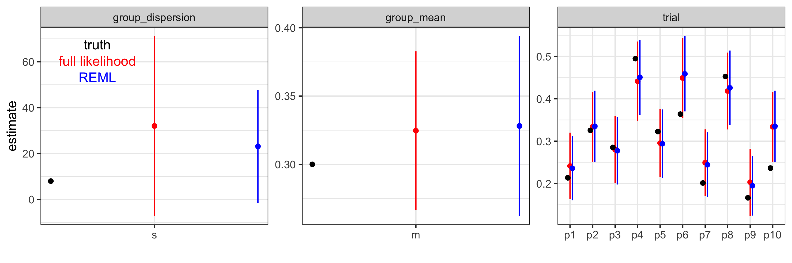

Hand rolling empirical Bayes estimation of a hierarchical model to learn how it works
This is a quick experiment to teach myself if I can just use full likelihood optimization to get well-behaved empirical Bayes estimate of both the trial-level random effects and the metastudy group-level hyperparameters in a mixed model.
Why? Because proper statisticians say you aren’t supposed to use a full likelihood to estimate random effects and hyperparameters because it’s biased for the group-level variance components, but how much does it matter for model fitting metastudy applications?
I care because I like to use simple optimizations when initially calibrating models on the kind of strange data types I get from papers when I don’t have the individual-level data. I want to better understand when I can take shortcuts and still get decent statistical properties during model development. Then, if doing the stats better proves to be important, relative to other limitations of the model, we can do better later.
Also, I use packages to do mixed-effects modeling all the time, but I’ve never worked out a non-Gaussian example. That is not a morally-sustainable position.
What? Compare full maximum likelihood (ML) estimate where I jointly
optimize over the subject-level random effects and the group level
hyperparameters, vs the restricted maximum likelihood (REML) estimate
where I first optimize only over the hyperparamaters and then find an
empirical Bayes estimate of the random effects given the
hyperparameters.
For the best tight description of the two algorithms that I’ve found,
see this documentation for Estimating Parameters in Linear
Mixed-Effects Models from The
Mathworks.
What did I learn? WHELP, it looks full likelihood optimization is
just fine, at least for this example, which is on a relevant scale for a
vaccine model building metastudy. (Of order 10 trial arms, with of order
100 subjects per arm, and binary outcomes.)
I also learned that it was easy to implement the REML approach in this
example. So, if it’s also easy on the real calibration problem to come,
I’ll probably just do that.
To learn more, and very quickly, about what I’m trying to do, here’s a useful chat log with ChatGPT4.5 to go along with this.
What am I looking for from you? I’ve learned a lot of stats over the last 15 years, but I’m not trained as a statistician and I’m always learning more. Please comment if you see anything you’d like to correct or expand upon. Also, let me know if this was useful to you. Thanks!
Note about how this post was generated. This post was generated
directly from the commented R script using the knitr::spin
functionality of rmarkdown::render. This gives all the advantages of
scripts and r-markdown, without the disadvantages. Check out this blog
post by Dean
Attali
to learn more.
Setting up the study
First, we set up a study with 10 trial arms and 100 people measured per arm. The group level is the ensemble of trial arms, and the individuals in this exmaple are the trial arms. The observations for each trial arm are zero or one for the outcome, and each arm has a true probability of the outcome drawn from a beta distribution for the ensemble of studies. Note that this isn’t set up as real vaccine efficacy measurement. I’m just interested in looking at cohort parameter estimation for now. VE would be a transform on that, if the arms were labeled by treatment vs control.
# set up the environment
library(tidyverse)
library(rmutil)
library(stats4)
library(knitr)
# set seed for reproducibility. Comment out to run many examples to see that this example is representative.
set.seed(100)
##simulate binomial draws from a beta random-effects model
# typical example of a metastudy, 10 trials, ~100 subjects per trial
n_trials = 10 # don't change! I hard-coded 10 later for dumb reasons w/r/t variable names in stats4::mle that I didn't feel like debugging.
n_subjects=100 # you can change this if you want.
# set up the measurement-level data frame
subjects = expand_grid(ID=1:n_trials,rep = 1:n_subjects)
## draw probability of positive for each ID from a beta distribution
# rmutil::betabinomial parameterization
m=0.3
s=8
# rbeta parameterization
alpha=m*s
beta=s-alpha
# add true trial-level outcome probality to the subject data
subjects = subjects |> left_join(
data.frame(ID=1:n_trials,p=rbeta(n_trials,shape1=alpha,shape2=beta)))
# draw binomial samples for each subject
subjects = subjects |> cbind(
data.frame(response=rbinom(n=nrow(subjects),size=1,prob=subjects$p)))
# collapse the measurement-level data into subject level data for fitting later
observed = subjects |> group_by(ID,p) |>
summarize(n_pos=sum(response),
n_trials=n(),
p_hat = n_pos/n_trials)
observed |> kable()
| ID | p | n_pos | n_trials | p_hat |
|---|---|---|---|---|
| 1 | 0.2134503 | 22 | 100 | 0.22 |
| 2 | 0.3254404 | 34 | 100 | 0.34 |
| 3 | 0.2853022 | 27 | 100 | 0.27 |
| 4 | 0.4947419 | 48 | 100 | 0.48 |
| 5 | 0.3225656 | 29 | 100 | 0.29 |
| 6 | 0.3637010 | 49 | 100 | 0.49 |
| 7 | 0.2012123 | 23 | 100 | 0.23 |
| 8 | 0.4527466 | 45 | 100 | 0.45 |
| 9 | 0.1662158 | 17 | 100 | 0.17 |
| 10 | 0.2363248 | 34 | 100 | 0.34 |
Parameter inference with the full likelihood
The first approach I’m considering is maximum likelihood estimation of
both the population-level hyperparameters and the trial-level outcome
probabilities. We can estimate both the MLE and the Wald confidence
intervals from the variance-covariance matrix using
stats4::mle.
In the code chunk below, I define the likelihood function, run the
optimization (using method = 'L-BFGS-B with appropriate bounds to
respect parameter domains), and tidy up the results for display and
plotting later.
# define the negative log likelihood for the fully parameterized model: beta-distributed population + individial binomial probabilities
# Note that I'm hardcoding data for this demo so I don't have to worry about passing data to mle later. This is for convenience.
minus_log_lik = function(m=alpha/(alpha+beta),s=(alpha+beta),
p1=observed$p[1],p2=observed$p[2],p3=observed$p[3],p4=observed$p[4], # there's surely a nicer way to do this...
p5=observed$p[5],p6=observed$p[6],p7=observed$p[7],p8=observed$p[8],
p9=observed$p[9],p10=observed$p[10]){
a = m*s
b = s-a
p =c(p1,p2,p3,p4,p5,p6,p7,p8,p9,p10)
-sum(dbeta(x=p,shape1=a,shape2=b,log=TRUE) + dbinom(x=observed$n_pos,size=observed$n_trials,prob=p,log=TRUE))
}
minus_log_lik()
# find the maximum likelihood estimate simulateously for both the trial-level random effects and the hyperparameters.
model_lik = stats4::mle(minus_log_lik, start = list(m=0.5,s=10,p1=0.5,p2=0.5,p3=0.5,p4=0.5,
p5=0.5,p6=0.5,p7=0.5,p8=0.5,p9=0.5,p10=0.5),
method='L-BFGS-B',
upper=c(0.99999,Inf,0.99999,0.99999,0.99999,0.99999,0.99999,0.99999,0.99999,0.99999,0.99999,0.99999),
lower=c(0.00001,0,0.00001,0.00001,0.00001,0.00001,0.00001,0.00001,0.00001,0.00001,0.00001,0.00001))
summary(model_lik)
# tidy up the results for display and later plotting
full_lik_params = data.frame(true=c(m=m,s=s,observed$p), estimate =coef(model_lik), se = sqrt(diag(vcov(model_lik )))) |>
mutate( z = (true-estimate)^2/se^2,
lower = estimate - 1.96*se, # wald confidence interval
upper = estimate + 1.96*se) |>
rownames_to_column(var='param') |>
select(param, everything()) |>
mutate(param=factor(param,levels=c('m','s','p1','p2','p3','p4','p5','p6','p7','p8','p9','p10'))) |>
mutate(level=factor(c('group_mean','group_dispersion',rep('trial',10)))) |>
mutate(param_index = 1:12)
full_lik_params
## param true estimate se z lower upper level param_index
## 1 m 0.3000000 0.3246235 0.02967484 0.68853213 0.2664609 0.3827862 group_mean 1
## 2 s 8.0000000 32.0202634 19.93898104 1.45127465 -7.0601394 71.1006663 group_dispersion 2
## 3 p1 0.2134503 0.2414595 0.04012803 0.48719936 0.1628086 0.3201105 trial 3
## 4 p2 0.3254404 0.3337523 0.04203733 0.03909562 0.2513592 0.4161455 trial 4
## 5 p3 0.2853022 0.2799146 0.04053223 0.01766756 0.2004715 0.3593578 trial 5
## 6 p4 0.4947419 0.4414270 0.04786335 1.24076659 0.3476149 0.5352392 trial 6
## 7 p5 0.3225656 0.2952969 0.04085350 0.44552396 0.2152241 0.3753698 trial 7
## 8 p6 0.3637010 0.4491181 0.04839787 3.11484948 0.3542583 0.5439780 trial 8
## 9 p7 0.2012123 0.2491503 0.04016259 1.42467515 0.1704316 0.3278690 trial 9
## 10 p8 0.4527466 0.4183538 0.04634406 0.55074260 0.3275194 0.5091881 trial 10
## 11 p9 0.1662158 0.2030039 0.04030446 0.83312302 0.1240072 0.2820006 trial 11
## 12 p10 0.2363248 0.3337523 0.04203733 5.37146452 0.2513592 0.4161455 trial 12
Parameter inference with REML and empirical Bayes
Before looking to closely at the results, let’s look at the other (statistician-preferred) approach of estimating the hyperparameters first with the trial-level random effects integrated out, and then estimating the trial-level random effects given the hyperparameter MLEs.
For the beta-binomial model, the restricted likelihood is just the analytic betabinomial distribution, which I wrap into a negative log likelhood for fitting.
# hyperparameter likelihood
minus_log_REML = function(m=alpha/(alpha+beta),s=(alpha+beta)){
-sum(rmutil::dbetabinom(y=observed$n_pos,size=observed$n_trials,m=m,s=s,log=TRUE))
}
minus_log_REML()
# hyperparameter MLE
model_REML = stats4::mle(minus_log_REML, start = list(m=0.5,s=1),
method='L-BFGS-B',
upper=c(0.99999,Inf),
lower=c(0.00001,0))
summary(model_REML)
Next, given the MLEs for the hyperparameters, I estimate the trial-level outcome probabilities and tidy up all the results.
# empirical Bayes likelihood for the individual-level random effects. Plug in MLE of the hyperparameters.
minus_log_REML_p = function(p1=observed$p[1],p2=observed$p[2],p3=observed$p[3],p4=observed$p[4], # there's probably a nicer way to do this...
p5=observed$p[5],p6=observed$p[6],p7=observed$p[7],p8=observed$p[8],
p9=observed$p[9],p10=observed$p[10]){
a = coef(model_REML)[1]*coef(model_REML)[2]
b = coef(model_REML)[2]-a
p =c(p1,p2,p3,p4,p5,p6,p7,p8,p9,p10)
-sum(dbeta(x=p,shape1=a,shape2=b,log=TRUE) + dbinom(x=observed$n_pos,size=observed$n_trials,prob=p,log=TRUE))
}
minus_log_REML_p()
# estimate the trial-level probabilities
model_REML_p = stats4::mle(minus_log_REML_p, start = list(p1=0.5,p2=0.5,p3=0.5,p4=0.5,
p5=0.5,p6=0.5,p7=0.5,p8=0.5,p9=0.5,p10=0.5),
method='L-BFGS-B',
upper=c(0.99999,0.99999,0.99999,0.99999,0.99999,0.99999,0.99999,0.99999,0.99999,0.99999),
lower=c(0.00001,0.00001,0.00001,0.00001,0.00001,0.00001,0.00001,0.00001,0.00001,0.00001))
summary(model_REML_p)
# and tidy up the results
REML_params=data.frame(true=c(m=m,s=s,observed$p), estimate =c(coef(model_REML),coef(model_REML_p)), se = c(sqrt(diag(vcov(model_REML))),sqrt(diag(vcov(model_REML_p))))) |>
mutate( z = (true-estimate)^2/se^2,
lower = estimate - 1.96*se,
upper = estimate + 1.96*se) |>
rownames_to_column(var='param') |>
select(param, everything()) |>
mutate(param=factor(param,levels=c('m','s','p1','p2','p3','p4','p5','p6','p7','p8','p9','p10'))) |>
mutate(level=factor(c('group_mean','group_dispersion',rep('trial',10)))) |>
mutate(param_index = 1:12)
REML_params
## param true estimate se z lower upper level param_index
## 1 m 0.3000000 0.3280964 0.03351673 0.70271450 0.2624036 0.3937892 group_mean 1
## 2 s 8.0000000 23.1436114 12.56215846 1.45321669 -1.4782192 47.7654420 group_dispersion 2
## 3 p1 0.2134503 0.2360292 0.03858028 0.34251204 0.1604119 0.3116466 trial 3
## 4 p2 0.3254404 0.3350849 0.04288521 0.05057560 0.2510299 0.4191399 trial 4
## 5 p3 0.2853022 0.2773025 0.04067250 0.03868527 0.1975843 0.3570206 trial 5
## 6 p4 0.4947419 0.4506498 0.04520559 0.95134048 0.3620469 0.5392528 trial 6
## 7 p5 0.3225656 0.2938117 0.04138481 0.48273865 0.2126975 0.3749259 trial 7
## 8 p6 0.3637010 0.4589045 0.04527371 4.42194639 0.3701680 0.5476410 trial 8
## 9 p7 0.2012123 0.2442839 0.03903654 1.21741661 0.1677723 0.3207956 trial 9
## 10 p8 0.4527466 0.4258858 0.04492556 0.35748004 0.3378317 0.5139399 trial 10
## 11 p9 0.1662158 0.1947565 0.03597917 0.62925532 0.1242373 0.2652756 trial 11
## 12 p10 0.2363248 0.3350849 0.04288521 5.30331730 0.2510299 0.4191399 trial 12
Results
Now that we’ve run both estimation processes, we can compare the results to each other and the underlying simulated truth.
ggplot() +
geom_point(data=full_lik_params,aes(x=param_index,y=estimate),color='red') +
geom_segment(data=full_lik_params,aes(x=param_index,y=lower,yend=upper,group=param),color='red') +
geom_point(data=REML_params,aes(x=param_index+0.1,y=estimate),color='blue') +
geom_segment(data=REML_params,aes(x=param_index+0.1,y=lower,yend=upper,group=param),color='blue') +
geom_point(data=full_lik_params,aes(x=param_index-0.1,y=true)) +
theme_bw()+
facet_wrap('level',scales='free') +
scale_x_continuous(breaks=seq(1:12),labels=levels(full_lik_params$param),minor_breaks = NULL) +
xlab('') +
geom_text(data=data.frame(param_index=rep(1.945,3),y=full_lik_params$upper[2]*c(0.95,0.85,0.75),label=c('truth','full likelihood','REML'),level=rep('group_dispersion',3)),
aes(x=param_index,y=y,label=label),color=c('black','red','blue'))

In this example, the results are qualitatively similar.
-
Nominal 95% confidence interval coverage is acceptable for my purposes for both,
- especially as Wald intervals are known to be too narrow and don’t enforce that the dispersion hyperparameter must be positive because I worked on the outcome scale and not the link scale.
-
The trial-level effect estimates and the group-level mean estimates are nearly identical.
-
The group-level dispersion parameter is biased high with the full likelihood vs the REML estimate, as expected from the stats theory, and in this case a bit wider.
My take-away
The most interesting parameters for the analogous problem in the immunity modeling building to come are the group-level mean and trial-level individual effects, both of which are estimated with similar quality regardless of the method. The group-level dispersion is the least relevant parameter for that activity, and so I take away that I’m probably fine to do whatever is easiest to implement.
And regardless, this will be a great place to engage with some peer review after the model is prototyped, so that we can do better if needed.
Thanks for reading!